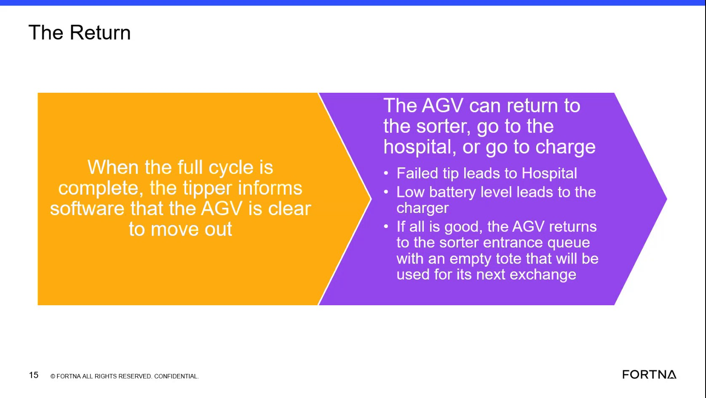

| Procedure ID | proc_interpret_agv_post_cycle_destination_v1 |
|---|---|
| Title | Interpret AGV Destination After A Completed Cycle |
| Procedure Type | reference |
| Primary Role | operator |
| Support Safe | Yes |
| Validation Status | needs_sme_review |
| Merge Status | source_finalized |
Use the training-video destination mapping to interpret where an AGV should go after a completed tipper cycle. After the tipper indicates the AGV is clear to move out, the documented outcomes are: failed tip or clamp issue leads to hospital, low battery leads to charger, and otherwise the AGV returns to the sorter entrance queue with an empty tote for the next exchange.
Use this reference when a full tipper cycle has completed and you need to interpret the documented AGV destination based on the source-described post-cycle conditions.
Responsible role: operator
Instruction:
Confirm that the full cycle is complete and identify that the tipper has informed the software that the AGV is clear to move out.
Expected result:
You have confirmed the AGV is at the post-cycle decision point described by the training source.
Screens / Images:

Stop or Escalate If:
Responsible role: operator
Instruction:
Check whether the AGV had a failed tip or a clamp-related issue. Compare that condition to the documented outcome that a failed tip leads to the hospital.
Expected result:
If a failed tip or clamp issue is present, the documented destination is hospital.
Screens / Images:
Stop or Escalate If:
Responsible role: operator
Instruction:
Check whether the AGV has a low battery level. Compare that condition to the documented outcome that low battery leads to the charger.
Expected result:
If low battery is present, the documented destination is charger.
Screens / Images:
Stop or Escalate If:
Responsible role: operator
Instruction:
If neither failed tip nor low battery applies, compare the AGV state to the documented normal outcome that it returns to the sorter entrance queue with an empty tote for the next exchange.
Expected result:
If all is good and no exception applies, the documented destination is the sorter entrance queue with an empty tote.
Screens / Images:
Stop or Escalate If:
Responsible role: operator
Instruction:
Record the destination indicated by the documented mapping: sorter entrance queue, hospital, or charge.
Expected result:
A single documented destination outcome is identified and recorded from the source mapping.
Screens / Images:
Stop or Escalate If: